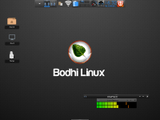
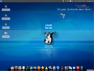
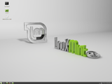
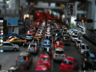
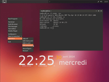
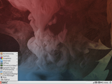
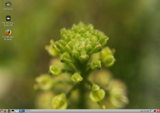

Ubuntu
In diesem Artikel werden Ubuntu-basierende Distributionen vorgestellt, die für den Einsatz auf alter Hardware geeignet sind. Diese inoffiziellen Distributionen sind vollständig mit den Paketquellen von Ubuntu kompatibel und unterscheiden sich nur durch den Fenstermanager, die installierten Programme sowie die (Vor-)Konfiguration von Ubuntu. In diesem Sinne kann man sie als "Remaster", "Spin-off", "Remix" oder auf deutsch als Abwandlung des offiziellen Ubuntu bezeichnen.
Benutzer, die bereits mit Ubuntu vertraut sind, sollten mit diesen Distributionen relativ problemlos klarkommen. Wünscht man über einen längeren Zeitraum mit Aktualisierungen versorgt zu werden, kann es empfehlenswert sein, eine Distribution bzw. Version mit Long Term Support (LTS) zu bevorzugen.
Details zu den jeweils verwendeten Fenster-Managern finden sich in den Artikeln:
Enlightenment bzw. E17 (eigene Desktop-Umgebung)
Xfce (eigene Desktop-Umgebung)
und im folgenden Blogeintrag: Desktops für Individualisten – Fenstermanager 
Entscheidend ist für viele die Umstellung auf Deutsch als Systemsprache. Durch die Verwendung der offiziellen Paketquellen können alle hier genannten Distributionen entsprechend umgestellt werden. Dies geschieht normalerweise bereits bei der Installation, was allerdings eine bestehende Internet-Verbindung voraussetzt. Alternativ kann man auch das Paket language-selector-gnome selbst installieren und dann "gnome-language-selector" mit Root-Rechten aufrufen (siehe auch Spracheinstellungen). Problematisch wird es bei selbst entwickelten Programmen (meist Konfigurationswerkzeugen). Diese sind häufig nur in Englisch enthalten.
Der Platzbedarf auf der Festplatte ist bei allen Systemen mehr oder weniger identisch: direkt nach der Installation werden ca. 4 GiB belegt, auf der sicheren Seite ist man mit 8 GiB oder mehr (ohne Benutzerdaten).
Ehemalige inoffizielle Derivate¶
Nur noch aus historischen Gründen interessant sind die folgenden Varianten. Aktuelle Versionen dieser Derivate basieren entweder nicht mehr auf Ubuntu, oder ihre Weiterentwicklung ist eingeschlafen.
#!CrunchBang Linux - verwendet Debian als Basis
moonOS
 - Projekt inaktiv
- Projekt inaktivopenGEU
- Projekt inaktivZevenOS
- Weiterentwicklung als Neptune (früher ZevenOS-Neptune) auf Basis von Debian
Inoffizielle Ubuntu-Derivate¶
Eine alphabetisch sortierte Liste.
Bodhi Linux¶

Bodhi Linux geht von einem minimalistischen Ansatz aus: Vorinstalliert sind lediglich ein Webbrowser (Midori), ein Dateimanager (PCManFM) und ein Editor (Leafpad). Weitere Programme können über die Paketverwaltung (Synaptic) oder via apturl aus dem AppCenter nachinstalliert werden. Als Desktop-Umgebung wird Enlightenment (E17) bzw. Moksha verwendet.
Die Entwickler bieten zusätzlich eine eigene Paketquelle mit Programmen, die unter Ubuntu entweder veraltet und gar nicht enthalten sind. Da auch GetDeb standardmäßig eingebunden ist, erweitert sich die Anzahl der Programme nochmal. Weitere Informationen liefert das Bodhi Wiki . Wichtig für Umsteiger ist beispielsweise die Anleitung Change System Language .
Im Februar 2015 ist die Version 3.0 auf Basis von Ubuntu 14.04 erschienen , die E19 und den Kernel 3.16 nutzt (eine alternative Legacy-Ausgabe enthält E17 und Kernel 3.2). Hier wurden bis auf den Browser alle Programme durch Enlightenment-Komponenten ersetzt.
Unzufrieden mit dem Entwicklungsverlauf von E19 hat Begründer Jeff Hoogland Mitte 2015 beschlossen, E17 zu forken und als Moksha Desktop weiterzuentwickeln. Bodhi 3.1 oder neuer ist das Ergebnis dieser Abspaltung.
Emmabuntüs¶

Das französische Projekt Emmabuntüs widmet sich speziell dem Recycling alter Hardware und hat für diesen Zweck eine eigene inoffizielle Ubuntu-Variante mit Xfce entwickelt. Einen optischen Eindruck vermittelt die Projektseite auf SourceForge . Das Installations-Abbild ist mit ca. 3,4 GiB sehr groß, was den bereits enthaltenen Sprachpaketen geschuldet ist. Daher ist zur Installation kein Internet-Zugang erforderlich. Die Entwickler empfehlen, die Internetverbindung erst nach Abschluss der Installation einzurichten (um Sicherheitsaktualisierungen einspielen zu können).
Erwähnt werden sollen speziell die Version 2 (1.06 oder neuer), die u.a. einen deutschsprachigen Installationsassistenten enthält, und die ab September 2014 verfügbare Version 3 , nun auf Basis von Xubuntu 14.04.1.
Die aktuelle Version Emmabuntüs DE basiert dagegen auf Debian.
Linux Mint¶
 Von Linux Mint aus Irland gab es spezielle "Community Editionen" (CE), die eine andere Desktop-Umgebung bzw. einen anderen Fenstermanager als Standard einsetzen. Ab Linux Mint 9 entfiel der Zusatz "CE", alle Varianten wurden nun als offizielle Mint-Versionen betrachtet. Ein praktischer Vorteil von Linux Mint ist die vollständige Multimedia-Unterstützung, die unter Ubuntu erst nachinstalliert werden muss.
Linux Mint Xfce¶
Linux Mint Xfce basiert in der Version 17 auf Ubuntu 14.04 LTS. Zwei Jahre länger unterstützt (bis 2021) wird die Version 18 .
LXLE¶

Basierend auf Lubuntu 16.04 bietet das Projekt LXLE (Lubuntu Extra Life Extension) eine angepasste Lubuntu-Version, bei der der Benutzer nach der Installation einen den eigenen Vorkenntnissen angepassten Desktop auswählen kann. Berücksichtigt wird das Verhalten von Windows XP, GNOME 2, Mac OS X oder Unity. Leider konnte der Entwickler der Versuchung nicht widerstehen, alle seine Lieblingsprogramme vorzuinstallieren. So ist eine Standardinstallation mit 4 GiB doppelt so groß wie bei Lubuntu. Auch die Umstellung auf die Systemsprache Deutsch fällt ungewohnt schwer.
Madbox¶

Eine CrunchBang sehr ähnliche Distribution ist das belgische Madbox  . Ein ISO-Abbild der noch auf Ubuntu 14.04 basierenden Distribution ist auf dem Download-Server
. Ein ISO-Abbild der noch auf Ubuntu 14.04 basierenden Distribution ist auf dem Download-Server  zu finden.
zu finden.
Intern wurde nach anfänglichen Experimenten mit Xfce (bis Madbox 9.10) auf Openbox und weitere LXDE-Komponenten umgestellt. Installieren lässt sich Madbox mit dem Befehl ubiquity – der unter Ubuntu grundsätzlich immer verwendet werden kann, falls ein entsprechendes Symbol fehlt.
Peppermint OS¶

Peppermint OS ist eine Abspaltung (Fork) von Lubuntu mit einem Schuss Linux Mint und setzt auf die bewährte Kombinationen von Openbox und LXDE. Die Entwickler haben in der Vergangenheit bereits die LXDE- und Fluxbox-Varianten von Linux Mint zusammengestellt (die inzwischen nicht mehr existieren).
Von ähnlich konzipierten Distributionen hebt sich Peppermint durch die Integration diverser Webdienste statt lokaler Anwendungen ab. Dazu wird das selbst entwickelte Framework Ice nach dem Vorbild von Mozilla Prism genutzt. Als Webbrowser kommen Firefox oder Chromium zum Einsatz. In Ubuntu erlebte diese Technik eine Renaissance: die bei 14.04 verfügbaren Web Apps.
Als Ziel sehen die Entwickler weniger einen vollwertigen Einzelplatz-Rechner, sondern ein besonders schnell startendes System, das sich in erster Linie auf Online-Anwendungen bzw. Webdienste konzentriert. Damit wird implizit auch eine (mehr oder weniger) dauerhafte Internet-Verbindung vorausgesetzt. Allerdings können alle benötigten oder gewünschten Programme auch lokal installiert werden (weitere Details ).
Aktuell ist Peppermint OS 8, das im Hintergrund auf Lubuntu 16.04 setzt.
WattOS¶

WattOS ist aus einer Initiative entstanden, mit dem Ziel, den Stromverbrauch zu minimieren. Während frühere Versionen auf Ubuntu aufbauten, wechselte man mit R8 zu Debian als Grundlage. Ab der Version R9 dient wieder Ubuntu als Basissystem, konkret 14.04.
Als Fenstermanager wird einmal mehr Openbox eingesetzt, kombiniert mit weiteren Komponenten aus LXDE. Die Unterstützung für MP3 und DVD-Wiedergabe ist bereits enthalten. Zudem wird eine "Microwatt Edition" angeboten, die den tiling-fähigen Fenstermanager i3 nutzt und so noch weniger Arbeitsspeicher belegt.
Tabellarische Übersicht¶
Die in der folgenden Tabelle angegebenen Arbeitsspeicheranforderungen entsprechen nicht den Minimalanforderungen, sondern orientieren sich an Praxiswerten (wobei die Grundregel lautet: noch mehr RAM hilft noch viel mehr). Zum Vergleich sind hier auch die aktuellen offiziellen Varianten von Ubuntu aufgeführt.
| Ubuntu-Varianten und inoffizielle Derivate | |||||
| Name | RAM (MiB) | Ubuntu-Basisversion | Desktop/WM | Anmerkungen | |
| Bodhi Linux | 512 | 16.04 LTS | E17 | ||
| Emmabuntüs | 512 | 14.04 LTS | Xfce | 1 GiB RAM für LiveDVD empfohlen | |
| Linux Mint Xfce | 512 | 16.04 LTS | Xfce | ||
| LXLE | 512 | 16.04 LTS | Openbox bzw. LXDE | ||
| Madbox | 512 | 14.04 LTS | Openbox | ||
| Peppermint | 512 | 16.04 LTS | Openbox bzw. LXDE | ||
| WattOS | 512 | 16.04 LTS | Openbox bzw. LXDE | ||
| Ubuntu | 1024 | 14.04 LTS | Unity | ||
| Ubuntu GNOME | 1024 | 14.04 LTS | GNOME 3 | ||
| Ubuntu MATE | 768 | 16.04 | MATE | ||
| Kubuntu | 1024 | 14.04 LTS | KDE | ||
| Lubuntu | 512 | 14.04 LTS | Openbox bzw. LXDE | ||
| Xubuntu | 768 | 14.04 LTS | Xfce | ||
Links¶
Alte Hardware
 Übersichtsartikel
ÜbersichtsartikelInoffizielle Ubuntu-Derivate - Wikipedia
Linux für ältere Rechner optimieren
- Einfluss verschiedener Themes auf die Geschwindigkeit von Xubuntu (siehe auch GTK Engines)Linux für ältere Rechner optimieren - Teil 2
- einige Tipps zur Optimierung von Xubuntu
Eigene Desktopumgebung - Ubuntu selbst modifizieren
- Erstellt mit Inyoka
-
 2004 – 2017 ubuntuusers.de • Einige Rechte vorbehalten
2004 – 2017 ubuntuusers.de • Einige Rechte vorbehalten
Lizenz • Kontakt • Datenschutz • Impressum • Serverstatus -
Serverhousing gespendet von